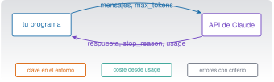

API, investigación y proyectos integradores
C9 · Vía C
Versión 0.2.0 · editada el 23/10/2026 · comprobada el 23/10/2026 · Claude Code 2.1.309 (doc.) · pendiente de revisión

Objetivos y prerrequisitos
Objetivos. Al terminar la unidad sabrás:
- explicar qué es la API de Claude, en qué se diferencia de la aplicación y de Claude Code, y cuándo conviene cada una;
- autenticarte sin exponer la clave, hacer una petición con límites, leer
usagey calcular el coste; - tratar errores y límites de uso distinguiendo lo reintentable de lo que no lo es;
- pedir y validar salidas estructuradas, y procesar documentos y lotes;
- probar sin red ni coste un programa que usa la API, y llamarla desde Python y desde Julia;
- evaluar resultados con un conjunto de oro y una línea base local y registrar lo necesario para reproducir;
- montar un proyecto integrador: informe Quarto reproducible con un paso de IA opcional y revisable.
Prerrequisitos. C5 (pruebas, revisión de código); recomendable C6 (datos e informes Quarto) y C2 (variables de entorno y secretos).
Tiempo orientativo. 8–10 horas. Nivel: avanzado. Herramientas: Python 3.11+ con uv, Julia 1.12 y Quarto. Todo lo que llama a la API real cuesta dinero y es opcional: los ejemplos funcionan con un transporte simulado, sin clave y sin gasto.
Se probó el código de claude/c9-api/_ejemplo/ con el SDK oficial de Python (anthropic 2.2.0) sobre un transporte HTTP simulado (sin red ni clave): 26 pruebas pytest (petición enviada, coste, reintentos, errores 400/401/403/404/429/5xx, truncado, rechazo, salida estructurada y su reparación, registro sin datos sensibles, proyecto integrador con renderizado Quarto) y 4 aserciones de Julia (puente a Python). El 23-10-2026. No se ha hecho ninguna llamada real a la API (requiere clave y cuesta), así que no se ha verificado el comportamiento real de ningún modelo ni de la salida estructurada con esquema, y los ejemplos de respuesta son ilustrativos. Los precios y los modelos proceden de la documentación (23-10-2026) y cambian; las reglas de la API (parámetros, cabeceras, límites) cambian por versión: contrasta con la documentación de tu fecha.
Temas de la unidad
- C9.1 La API de Claude: conceptos, autenticación y SDK
- C9.2 Peticiones, parámetros, tokens y coste
- C9.3 Salidas estructuradas y procesamiento de documentos
- C9.4 Errores, límites de uso, seguridad y reproducibilidad
- C9.5 Llamadas desde Python y desde Julia
- C9.6 Evaluación y registro de resultados en investigación
- C9.7 Procesamiento por lotes y automatización de informes científicos
- C9.8 Proyecto integrador: caso empresarial completo
Teoría breve
C9.1 La API de Claude: conceptos, autenticación y SDK
La API de Claude (la Messages API) es un servicio web: tu programa envía una petición con una lista de mensajes y recibe la respuesta del modelo, con el recuento de tokens consumidos. No guarda la conversación: es sin estado, y en cada petición envías el historial que quieras que el modelo vea. Es la tercera vía de C1.2 y se diferencia de las otras dos así (Models overview 2026):
| Aplicación Claude | Claude Code | API | |
|---|---|---|---|
| Qué es | Chat con proyectos, archivos, artefactos | Agente que trabaja en tu proyecto, con permisos | Servicio al que llama tu código |
| Quién escribe el bucle de trabajo | Anthropic | Anthropic | Tú (o una biblioteca) |
| Estado de la conversación | Lo guarda la app | Lo guarda la sesión | No hay: lo envías tú |
| Herramientas (editar ficheros, shell…) | Las de la app | Las de Claude Code, con permisos | Las que tú definas o las alojadas por Anthropic |
| Se paga | Suscripción o gratis | Suscripción o API | Por tokens, aparte de cualquier suscripción |
| Para | Conversar y trabajar con documentos | Programar y analizar en un proyecto | Integrar el modelo en tu software o en un proceso |
SDK. Los kits de desarrollo oficiales (Python, TypeScript, Java, Go, Ruby, C#, PHP) envuelven la API: construyen la petición, gestionan reintentos y convierten los errores en excepciones tipadas. No hay SDK oficial de Julia: se llama por HTTP o a través de Python (C9.5). Usa siempre el SDK oficial en lugar de reimplementar la lógica a mano.
Autenticación. La petición lleva una clave (o un token). Reglas:
- La clave es un secreto (C2.5): nunca en el código, en
CLAUDE.md, en un repositorio ni en un registro. - Se lee de la variable de entorno
ANTHROPIC_API_KEY; los SDK la toman solos:anthropic.Anthropic()sin argumentos. También admiten un token de inicio de sesión (ant auth login) o la federación de identidad en entornos en la nube. - Una clave por entorno y por persona, con el mínimo alcance; se revoca y se rota si se filtra: borrarla del repositorio no basta.
- La clave se crea en la consola de Anthropic y la facturación está ligada a esa organización (puedes fijar límites de gasto por espacio de trabajo).
- Para pruebas, una clave de pruebas con un tope bajo, o mejor, el transporte simulado de abajo.
Modelos (documentación consultada el 23-10-2026; cambian): Fable 5.1, Opus 5.5, Sonnet 5.5 y Haiku 5.5, con identificadores como claude-sonnet-5-5 y ventana de contexto de 1 millón de tokens y hasta 128 000 de salida (Models overview 2026). Los identificadores se escriben exactos, sin sufijos de fecha, y cada uno tiene una fecha mínima de retirada: tu código debe poder cambiar de modelo con una constante o un ajuste.
Pon a prueba lo anterior.
La API de Claude recuerda la conversación anterior, por lo que basta con enviar el último mensaje.
Falso. La API no tiene estado: cada petición debe incluir el historial que quieres que el modelo vea. Es lo que hace la aplicación por ti.
¿Dónde guardas la clave de la API para un script que la necesita?
- Escrita en el script, para no perderla.
- En un fichero
config.pyversionado. - En una variable de entorno (
ANTHROPIC_API_KEY) que el SDK lee, y fuera de cualquier fichero versionado. - En el
CLAUDE.mddel proyecto.
Variable de entorno (o el almacén de credenciales de tu sistema). Los ficheros versionados y CLAUDE.md llegan al historial de Git y, CLAUDE.md, al modelo.
C9.2 Peticiones, parámetros, tokens y coste
Una petición mínima con el SDK de Python (código probado con el transporte simulado, no contra el servicio real):
import anthropic
cliente = anthropic.Anthropic() # clave de ANTHROPIC_API_KEY
r = cliente.messages.create(
model="claude-sonnet-5-5",
max_tokens=1024, # tope de la respuesta: obligatorio
system="Eres un asistente de ingeniería. Sé breve.",
messages=[{"role": "user", "content": "¿Qué es la frecuencia de Nyquist?"}],
)
print(r.content[0].text)
print(r.usage.input_tokens, r.usage.output_tokens, r.stop_reason)Parámetros que importan. model (el identificador), max_tokens (tope obligatorio de la respuesta; no lo escatimes: una respuesta cortada a mitad es un error que cuesta una repetición), messages (el historial) y system (instrucciones permanentes). Para razonamiento, los modelos actuales usan pensamiento adaptativo y un parámetro de esfuerzo (output_config.effort); no se usa ya un presupuesto fijo de pensamiento. Según la documentación de referencia de la API consultada, temperature, top_p y top_k dejan de aceptarse (error 400) con la versión de API de 21-10-2026: no los incluyas en código nuevo y comprueba tu versión (esto afecta a lo que viste en C0.3: la temperatura sigue siendo el concepto, pero ya no siempre un mando que puedas ajustar).
La respuesta. r.content es una lista de bloques (texto, uso de herramientas, pensamiento…): se comprueba el tipo antes de leer .text. r.stop_reason dice por qué paró: end_turn (terminó), max_tokens (cortada), tool_use (quiere llamar a una herramienta), refusal (rechazó la petición por seguridad). Siempre se comprueba antes de usar el texto. r.usage da los tokens de entrada y salida (y de caché).
Coste. Con los precios por millón de tokens:
\[ \text{coste} = \frac{n_{\text{ent}}\,p_{\text{ent}} + n_{\text{sal}}\,p_{\text{sal}}}{10^{6}}. \]
| Modelo | Entrada (€/$ por MTok) | Salida |
|---|---|---|
| Haiku 5.5 | 0,10 $ (hasta 100K de prompt) | 0,50 $ |
| Sonnet 5.5 | 2 $ | 10 $ |
| Opus 5.5 | 4 $ | 20 $ |
| Fable 5.1 | 10 $ | 50 $ |
(Precios de la documentación de modelos, 23-10-2026; cambian.) Comprobado con el código del ejemplo: 20 000 tokens de entrada y 2 000 de salida cuestan 0,06 $ con Sonnet 5.5; 50 000 y 1 000 cuestan 0,0055 $ con Haiku 5.5 y 0,22 $ con Opus 5.5. Palancas de coste, de las que no pierden calidad a las que sí: reducir lo que envías (no pegues lo que no hace falta), caché de prompts (los tokens leídos de la caché cuestan una fracción de los normales: el prefijo debe ser idéntico), lotes asíncronos con un descuento del 50 %, y solo después elegir un modelo más pequeño o menos esfuerzo, midiendo antes con tus casos. client.messages.count_tokens(...) cuenta tokens antes de gastar.
Pon a prueba lo anterior.
Una petición envía 50 000 tokens y recibe 1 000 con Haiku 5.5 (0,10 $ y 0,50 $ por millón). ¿Cuántos dólares cuesta?
\((50\,000\cdot 0{,}10 + 1\,000\cdot 0{,}50)/10^6 = 0{,}0055\) $. Con Opus 5.5 serían 0,22 $: 40 veces más. Comprobado con el código del ejemplo.
stop_reason vale max_tokens. ¿Qué significa y qué haces?
- Que la respuesta es correcta y completa.
- Que se cortó por el tope; subes
max_tokenso pides menos, y no usas el texto como si estuviera completo. - Que la clave caducó.
- Que el modelo rechazó la petición.
max_tokens indica una respuesta truncada. El código del ejemplo lanza un error en ese caso para no tratar un texto a medias como terminado.
C9.3 Salidas estructuradas y procesamiento de documentos
Cuando el resultado lo va a leer un programa (una tabla, un número, una categoría), no basta con texto libre: hace falta una estructura que se pueda validar. Dos vías:
- Salida estructurada con esquema (función de la API:
output_config.format, yclient.messages.parse()en el SDK, que valida la respuesta contra tu esquema). Es la opción recomendada por la documentación de la API, y no se ha probado en este curso (necesita llamadas reales). - Validación propia (la del ejemplo,
extraer_json): se pide JSON, se parsea y se comprueba (¿están las claves?, ¿tienen el tipo esperado?); si falla, un intento de reparación con el error concreto, y si vuelve a fallar, se detiene con un error claro. Sirve con cualquier modelo.
Lo esencial es lo mismo: nunca confíes en que la salida es válida; compruébalo. Y no dejes un modelo «rellenar» lo que no sabe: permite el valor null o una categoría «no determinado».
Resultado comprobado (transporte simulado): un JSON correcto a la primera pasa; una respuesta en prosa («Claro: Norte, 1911061.69») provoca una reparación y la segunda respuesta válida se acepta; un JSON con tipos incorrectos tras la reparación lanza ValueError.
Documentos. La API acepta PDF (en base64) e imágenes dentro del mensaje, y una API de ficheros para subir un documento una vez y referenciarlo en varias peticiones; con las citas activadas, la respuesta señala qué fragmento del documento respalda cada afirmación (útil para verificar). Límites que cambian (tamaño, páginas): consúltalos. Dos reglas del curso: no subas documentos con datos que no puedas compartir (C0.7, C1.5; la API tiene condiciones propias de datos) y comprueba las citas contra el original.
Pon a prueba lo anterior.
Pides al modelo un JSON con region e importe y recibes {"region": "Norte", "importe": "mucho"}. ¿Qué haces?
- Lo uso: tiene las dos claves.
- Lo corrijo a mano en el código.
- Pido que lo repita hasta que salga bien, sin límite.
- Detecto el tipo incorrecto con la validación, intento una reparación acotada y, si falla, detengo el proceso con un error claro.
Se valida la estructura y los tipos; un reintento con el error concreto es razonable, pero acotado (si no, un fallo sistemático gasta dinero sin fin). Después, un error visible.
C9.4 Errores, límites de uso, seguridad y reproducibilidad
Errores. El SDK convierte los códigos HTTP en excepciones tipadas. Se capturan de la más específica a la más general y se decide si se puede reintentar:
| Código | Excepción (Python) | Significado | ¿Reintentar? |
|---|---|---|---|
| 400 | BadRequestError |
Petición mal formada o parámetro no admitido | No: corrige la petición |
| 401 | AuthenticationError |
Clave inválida | No |
| 403 | PermissionDeniedError |
La clave no tiene permiso | No |
| 404 | NotFoundError |
Modelo o recurso inexistente | No |
| 429 | RateLimitError |
Límite de uso | Sí, con espera (cabecera retry-after) |
| ≥500 | InternalServerError |
Fallo del servicio | Sí, con espera creciente |
| — | APIConnectionError |
Red | Sí |
Los SDK reintentan solos los 408, 409, 429 y ≥500 y los errores de conexión (por defecto, dos veces) con espera exponencial, y tienen un timeout por defecto de 10 minutos. Si escribes tu propio bucle de reintentos, desactiva los del SDK (max_retries=0) o tendrás reintentos dentro de reintentos.
Resultado comprobado (test_cliente.py, transporte simulado): un 429 con retry-after: 7 se reintenta respetando esa espera (7 s) y se recupera al tercer intento; un 429 persistente agota los intentos y relanza RateLimitError tras exactamente dos peticiones con reintentos=2; los 400, 401, 403 y 404 no se reintentan (una sola petición); un 500 se reintenta y se recupera; una respuesta max_tokens o refusal aborta con error.
Límites de uso. La API limita peticiones y tokens por minuto según tu nivel (y el modelo), y el gasto por organización o espacio de trabajo. Ante un 429: espera, reduce la concurrencia, agrupa peticiones con lotes y, si procede, pide más cupo. Las respuestas traen una cabecera de identificador de petición (request-id) que conviene registrar para cualquier reclamación.
Seguridad.
- Clave: variable de entorno, rotación, nunca en registros; un gestor de secretos en entornos compartidos.
- Datos: envía lo mínimo (el ejemplo envía solo cifras agregadas, no filas); nada de datos personales o confidenciales sin base y permiso (C0.7, C1.5); las condiciones de retención de la API son distintas de las de la aplicación: léelas.
- Entradas no confiables: un documento o una página que le pasas puede contener instrucciones maliciosas (prompt injection, C7.6). No des al modelo herramientas con efectos irreversibles sobre lo que lea de fuera sin supervisión.
- Salidas: trata el texto del modelo como entrada no fiable: no lo ejecutes (
eval,exec, shell) ni lo insertes sin escapar en HTML o SQL. - Registro: guarda metadatos (modelo, tokens, coste, identificador de petición, hash del prompt), no el contenido ni la clave. El ejemplo lo hace y se prueba que el texto del prompt no aparece en el registro.
Reproducibilidad. Una respuesta de un modelo no es reproducible del mismo modo que un cálculo: puede variar entre llamadas, y los modelos se retiran. Registra qué modelo, qué versión de prompt, qué fecha y qué parámetros; fija los identificadores de modelo; guarda las respuestas que alimentan un resultado publicado; y separa lo calculado (reproducible) de lo generado (revisable).
- Reintentar un 400 o un 401: no se arregla esperando; gastas tiempo y, a veces, dinero.
- Bucle de reintentos sin tope ni límite de gasto.
- No comprobar
stop_reasony usar un texto cortado o un rechazo como respuesta válida. - Meter la clave en el código o en el registro.
- Confiar en un identificador de modelo «de memoria» y escribirlo con un sufijo de fecha que no existe: usa el de la documentación.
Pon a prueba lo anterior.
Tu programa recibe un 429 con retry-after: 30. ¿Qué haces?
- Espero (al menos) 30 segundos y reintento, con un máximo de intentos.
- Reintento de inmediato, en bucle, hasta que funcione.
- Cambio la clave.
- Lo trato como un error definitivo y detengo todo sin más.
Un 429 es un límite transitorio: se espera lo que indica retry-after y se reintenta con un tope de intentos (y se reduce la concurrencia). Un bucle inmediato empeora el problema.
C9.5 Llamadas desde Python y desde Julia
Python. Es la vía directa (SDK oficial). El ejemplo cliente_claude.py envuelve una petición con reintentos, comprobación de stop_reason, coste y registro. La clave está en que el cliente se inyecta: la función llamar(cliente, ...) recibe un cliente, de modo que en las pruebas se le pasa uno real del SDK con un transporte HTTP falso, que ejecuta todo el código del SDK sin red:
import cliente_claude as cc
cli, vistas = cc.crear_cliente_simulado([{"estado": 429, "retry_after": "7"}, {"texto": "ok"}])
r = cc.llamar(cli, modelo="claude-sonnet-5-5", mensajes=[{"role": "user", "content": "x"}])Así se prueban los fallos (429, 401, respuesta truncada…) que con el servicio real son difíciles de provocar, sin gastar. Comprobado: la petición que envía el SDK es un POST a /v1/messages con model, max_tokens, messages y system; la clave no aparece en el cuerpo (viaja en una cabecera de autenticación que gestiona el SDK) y el SDK añade la cabecera de versión de la API.
Julia. No hay SDK oficial. Tres opciones, de más a menos recomendable aquí:
- A través del cliente de Python como subproceso: se aprovecha el cliente probado y los errores se propagan por el código de salida. Comprobado (
puente.jl, solo biblioteca estándar):resumir_con_python("…")devuelve el texto, los tokens (25 y 12) y el coste (0,00017 $) en modo simulado, y lanzaProcessFailedExceptionsi el programa falla (por ejemplo, sin argumentos).
function resumir_con_python(texto; simulado = true, modelo = "claude-sonnet-5-5")
orden = `uv run --with anthropic --with httpx2 python cliente_claude.py $texto --modelo $modelo`
simulado && (orden = `$orden --simulado`)
salida = read(orden, String) # ProcessFailedException si el código de salida ≠ 0
# … extraer los campos del JSON impreso …
end- HTTP directo con un paquete como
HTTP.jly un analizador JSON: tendrías que construir tú la petición (POST https://api.anthropic.com/v1/messages, cabeceras de autenticación y de versión, cuerpo JSON), gestionar errores y reintentos. No se ha probado aquí (no están instalados esos paquetes en el entorno del curso). Si lo haces, aplica las mismas reglas de C9.4. - PythonCall.jl (llamar a Python desde Julia): no se ha probado.
Alternativa local gratuita para todo lo que no necesite un modelo: reglas, expresiones regulares, un modelo local (Ollama u otros: no se tratan aquí) o el cálculo. En C9.6 la línea base es una expresión regular.
C9.6 Evaluación y registro de resultados en investigación
«Parece que funciona» no es una evaluación. Una evaluación mínima tiene:
- Un conjunto de casos con la respuesta esperada («conjunto de oro»), escrito por una persona, con casos normales, límite y de «no hay dato».
- Una métrica clara y simple (coincidencia exacta por campo, tasa de aciertos), que se calcula siempre igual.
- Una línea base local y gratuita (una expresión regular, una regla) con la que comparar: si el modelo no mejora lo que haces gratis, no lo necesitas.
- Un registro con modelo, versión del prompt, fecha y resultado, para poder repetir y comparar.
_ejemplo/evaluar.py implementa eso con cuatro casos sintéticos (texto de ventas → región e importe, incluido uno sin importe). Resultado comprobado: la línea base con expresión regular acierta 4/4; un «modelo» simulado que se equivoca por un factor 100 en un importe (680 en lugar de 68 000) obtiene 3/4 = 0,75 y la evaluación señala el fallo concreto; un predictor que falla con una excepción cuenta como error sin romper la evaluación.
Limitaciones que debes declarar. Cuatro casos son un ejemplo, no una evaluación: con pocos casos, una diferencia no es significativa. Las respuestas de un modelo varían: repite y registra la variación. Evita la contaminación (no evalúes con los ejemplos que pusiste en el prompt) y la métrica engañosa (la coincidencia exacta penaliza respuestas equivalentes, p. ej. 68000 frente a 68.000,0). Si el modelo hace de juez de otro modelo, también hay que validarlo contra personas.
En investigación: documenta modelo, fecha, versión del prompt, parámetros, número de casos y variación; publica los datos sintéticos o los permitidos y separa lo calculado de lo generado; no atribuyas a la IA un resultado sin la evaluación que lo respalda; y no uses datos con restricciones sin permiso.
Pon a prueba lo anterior.
¿Para qué sirve una línea base local gratuita (por ejemplo, una expresión regular) en una evaluación?
- Para sustituir siempre al modelo.
- Para tener con qué comparar: si el modelo no la mejora, quizá no hace falta pagarlo.
- Para evitar escribir casos de prueba.
- Para calcular el coste.
Da un punto de referencia barato y reproducible. Si el modelo no mejora la línea base en tus casos, el coste y la variabilidad no se justifican.
C9.7 Procesamiento por lotes y automatización de informes científicos
Cuando hay muchas peticiones y no hace falta la respuesta al instante, la API ofrece lotes (Message Batches): se envía una lista de peticiones, se consulta hasta que terminan y se leen los resultados, con un descuento del 50 %. Reglas: cada petición lleva un identificador propio (custom_id) porque los resultados llegan en cualquier orden; cada una puede salir bien, con error, cancelada o caducada, y hay que tratar cada caso. No se ha ejecutado ningún lote (requiere servicio real).
Automatizar un informe científico. Un informe periódico con un paso de IA debe cumplir lo de C8 y lo de este capítulo:
- las cifras las calcula el código (reproducibles) y la IA solo redacta o interpreta, etiquetada y revisable;
- a la IA se le envían datos agregados, no los datos brutos;
- el paso de IA es opcional y degradable: si falla, el informe sale igualmente, diciendo que falta;
- tope de coste y registro de cada llamada; ejecución desatendida con
dontAsky alerta de fallo (C8); - revisión humana antes de publicar.
C9.8 Proyecto integrador: caso empresarial completo
_ejemplo/proyecto/generar_informe.py une las unidades del curso en un informe Quarto reproducible de ventas (caso A, datos sintéticos): validar (C6) → resumir (C6) → borrador de interpretación con Claude, opcional (C9) → informe.qmd → quarto render (C6), con registro y pruebas (C5), listo para programar (C8).
python generar_informe.py # por defecto: solo cálculo, sin IA, sin coste
python generar_informe.py --simulado # paso de IA con transporte falso: sin clave, sin red, sin coste
python generar_informe.py --ia # llamada REAL (de pago): requiere ANTHROPIC_API_KEY
quarto render informe.qmd # HTML autocontenidoDecisiones de diseño (y por qué importan):
| Decisión | Motivo |
|---|---|
| Las cifras las calcula el código | Reproducibles y verificables (6 069 845,38 € de total, 109/1/5 de calidad) |
| La IA recibe solo agregados (comprobado: el prompt no contiene filas ni fechas) | Minimización de datos (C0.7) |
| El texto de la IA va en una sección «borrador generado por IA, sin revisar» con un aviso de revisión pendiente | Responsabilidad humana (C0.9) |
| El registro guarda modelo, tokens, coste y un hash (comprobado: no contiene el prompt) | Auditoría sin filtrar datos |
| Si la llamada falla, el informe se genera igualmente y se avisa | Degradación controlada |
| Modelo pequeño por defecto (Haiku 5.5) | Coste: 210 tokens de entrada y 48 de salida cuestan 0,000045 $ |
| El modo por defecto no usa la IA | Sin clave ni coste por defecto |
Resultado comprobado (7 pruebas del proyecto, incluido el renderizado con Quarto): validación 109/1/5; totales idénticos a los de C6 (Norte 1 911 061,69 €; Centro 2 539 781,72 €; Sur 1 619 001,97 €); formato español de los números; el modo por defecto produce un informe sin sección de IA; el modo simulado la añade etiquetada y registra la llamada; --ia sin clave termina con código 2; el HTML se renderiza y contiene la sección de interpretación. Una llamada real no se ha hecho.
Otros proyectos integradores (propuestas que recorren varias unidades): a) pipeline de calidad de datos (C6) con skill (C7) y tarea programada (C8) que avisa si cambia el recuento de ausentes; b) informe de vibración (caso E, C6) con revisión por un subagente (C7) y un resumen de IA etiquetado (C9); c) extractor de importes desde textos (C9.6) con evaluación y línea base, y documentación de límites.
Práctica guiada
Local gratuita (todo el código en modo simulado) · Puede generar coste (el modo real; opcional, con tope y clave de pruebas). Respuestas del modelo ilustrativas.
Ficha. Objetivo: construir y probar un cliente de la API con control de errores y coste, y un informe con un paso de IA opcional. Archivos: claude/c9-api/_ejemplo/ (cliente_claude.py, evaluar.py, puente.jl, proyecto/generar_informe.py y sus pruebas). Versiones: Python 3.11+, anthropic 2.x, Julia 1.12, Quarto. Resultado esperado: 26 pruebas pytest y 4 aserciones de Julia en verde. Problemas frecuentes: la clave en el código; reintentar un 400; no comprobar stop_reason.
- Ejecuta las pruebas sin red:
cd claude/c9-api/_ejemplo && uv run --with anthropic --with httpx2 --with pytest pytest -q→ 26 passed; yjulia --project=. claude/c9-api/_ejemplo/puente.jl→ 4 aserciones. - Lee
llamar(): ¿qué errores se reintentan y cuáles no? ¿Dónde se compruebastop_reason? ¿Qué se guarda en el registro y qué no? - Provoca fallos modificando el cliente simulado: un 401, un 500 seguido de éxito, una respuesta
max_tokens. Predice el resultado antes de ejecutar. - Calcula el coste de 1 000 informes con el modelo por defecto (210 y 48 tokens) y con Opus 5.5.
- Genera el informe en los tres modos: por defecto,
--simuladoy (solo si lo decides)--iacon una clave de pruebas y un tope de gasto. Compáralos y comprueba que las cifras son idénticas. - Revisa el prompt de la IA con la lista de C0.7: ¿qué datos sale de tu máquina? ¿Podrías enviar menos?
- Evalúa: ejecuta
evaluar.py; añade tres casos difíciles al conjunto de oro y comprueba si la línea base de expresión regular los resuelve. - Documenta qué reproducirías y qué no, si publicaras el informe con el paso de IA.
Qué has aprendido: una integración fiable se prueba fallando; las cifras las calcula el código; la IA se etiqueta y se revisa; y el coste y los datos se acotan antes de gastar.
«Pídeselo a Claude»
Escribe una función de Python que llame a la API de Claude con el SDK oficial para resumir un texto, con: la clave tomada de la variable de entorno, max_tokens explícito, comprobación de stop_reason, reintentos solo para errores transitorios (429, conexión, 5xx) respetando retry-after, cálculo de coste desde usage y un registro que no guarde el texto ni la clave. Escribe también pruebas que usen un transporte HTTP simulado (sin red) para los casos 429, 401 y respuesta truncada. No ejecutes nada y no llames a la API. Indica qué nombres de la API o del SDK no has podido comprobar en la documentación vigente y qué precios has supuesto.
Verifica.
- ¿Comprueba los nombres (
messages.create, excepciones,usage) con la documentación de tu versión del SDK? - Ejecuta tú las pruebas sin red: ¿cubren 429 con espera, 401 sin reintento y truncado?
- ¿Usa
temperature,top_potop_k? Con las versiones recientes de la API pueden dar error: ¿lo avisa? - ¿El registro contiene el prompt o la clave? Compruébalo con
grep. - ¿Los precios que usa coinciden con la página de modelos de hoy?
Ejercicios
Coste. Un trabajo envía 3 000 peticiones de 2 500 tokens de entrada y 300 de salida a Sonnet 5.5 (2 $ y 10 $ por MTok). ¿Cuánto cuesta? ¿Y con lotes (50 % menos)?
NotaSoluciónPor petición: \((2\,500\cdot2+300\cdot10)/10^6=0{,}008\) $; ×3 000 = 24 $. Con lotes, 12 $. (Precios de 23-10-2026.)
Errores. Clasifica como reintentable o no: a) 429; b) 400 por un parámetro no admitido; c) fallo de conexión; d) 401; e) 500; f)
stop_reason: max_tokens.NotaSoluciónReintentables: a, c, e (con espera y tope). No: b y d (corrige la petición o la clave). f no es un error HTTP: es una respuesta truncada; se sube
max_tokenso se pide menos, no se «reintenta igual».Salida estructurada. Escribe un esquema (claves y tipos) para extraer de una incidencia: equipo, fecha, gravedad (baja/media/alta/desconocida) y descripción. ¿Qué valor permites cuando el texto no dice la gravedad y por qué?
NotaSoluciónPermitir «desconocida» (o
null) evita que el modelo invente un valor. Se valida con las claves y los tipos, con un solo intento de reparación y un error visible si sigue fallando.Prueba sin red. Añade a
test_cliente.pyun caso para un 529 (servicio sobrecargado) que se recupera al segundo intento, y otro para un 401 que no se reintenta. Predice el número de peticiones en cada uno.Evaluación. Añade al conjunto de oro un caso con un importe con millones (
1.250.000,00 euros) y otro con una abreviatura («52,3 mil euros»). ¿Los resuelve la línea base? ¿Qué cambia?NotaSoluciónEl patrón acepta el primero (
1.250.000,00) pero no el segundo (necesita otra regla o un modelo). Es lo que se busca: la evaluación revela dónde la línea base no llega y justifica el modelo… o la regla extra.Reproducibilidad. Enumera qué registrarías para que otra persona pueda repetir (o al menos auditar) un informe que incluye texto generado por Claude.
NotaSoluciónModelo (identificador exacto) y fecha, versión del prompt, parámetros, el texto generado tal cual que entró en el informe, los datos agregados enviados (no los brutos), el coste y la persona que lo revisó.
La doy por superada si…
- Explico la diferencia entre la aplicación, Claude Code y la API, y cuándo uso cada una.
- Me autentico con una variable de entorno y no dejo la clave en código ni en registros.
- Hago una petición con
max_tokens, compruebostop_reasony calculo el coste desdeusage. - Distingo errores reintentables de los que no lo son y respeto
retry-after. - Valido una salida estructurada y limito la reparación.
- Pruebo mi código sin red ni coste con un transporte simulado.
- Llamo a la API desde Python y sé qué opciones tengo en Julia.
- Evalúo con un conjunto de oro y una línea base local, y registro lo necesario para reproducir.
- Construyo un informe Quarto reproducible con un paso de IA opcional, etiquetado y revisable.
- No presento un texto generado como un resultado calculado.
Referencias de esta unidad
Documentación de modelos y precios de la plataforma Claude (Models overview 2026) (consultada el 23-10-2026). Las reglas de la API, de los SDK y sus cambios (parámetros retirados, códigos de error, lotes, caché) proceden de la documentación de referencia de la API incluida en la skill claude-api de Claude Code 2.1.309 (Referencia de la API de Claude incluida en la skill claude-api (Claude Code 2.1.309) 2026), que se contrastó con el comportamiento del SDK anthropic 2.2.0 sobre un transporte simulado. Consulta siempre la documentación vigente: platform.claude.com/docs.
Referencias
Son las mismas que aparecen en el margen, junto al texto. La lista completa del curso, con el estado de verificación de cada ficha, está en R5.
Models overview. 2026. Documentación de la plataforma Claude (Anthropic), consultada el 23-10-2026. https://platform.claude.com/docs/en/models/overview.
Referencia de la API de Claude incluida en la skill claude-api (Claude Code 2.1.309). 2026. Material de referencia de Anthropic distribuido con Claude Code, consultado el 23-10-2026.